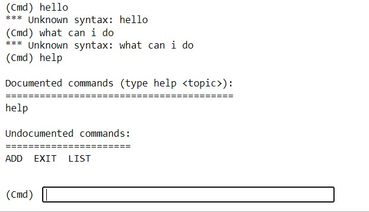

Exploring a simple Python shell

Task: Create Python shell
Review the blogs at Praka (2018) and Szabo (n.d.) and then create a CLI/ shell that implements the following:
When you enter the command LIST it lists the contents of the current directory
The ADD command will add the following two numbers together and provide the result
The HELP command provides a list of commands available
The EXIT command exits the shell
Results
An interactive shell allows the user to run commands one by one. Python is working as an interpretor in this situation. It allows the user to feed the shell commands such as new variables and python will execute the method immediately. It's a powerful function. The os module of Python provides a function called walk that makes it easy to go over all the directories and files in a directory tree.
I have use the web version of Jypyter Notebook in Codio as suggested, it is a popular IDE used for Python development. Please see my coding output embedded below.
Testing
Unknown commands return message “*** Unknown syntax:” + the unknown command as demonstrated. However the user can continue to enter another command the “help” command prints a list of Documented and Undocumented commands. Undocumented commands are methods which out a description which can be assessed by the user. Ideally I would have included documentation for each of the methods I added.

My simple shell was able to add two numbers and exit gracefully.

I was unable to